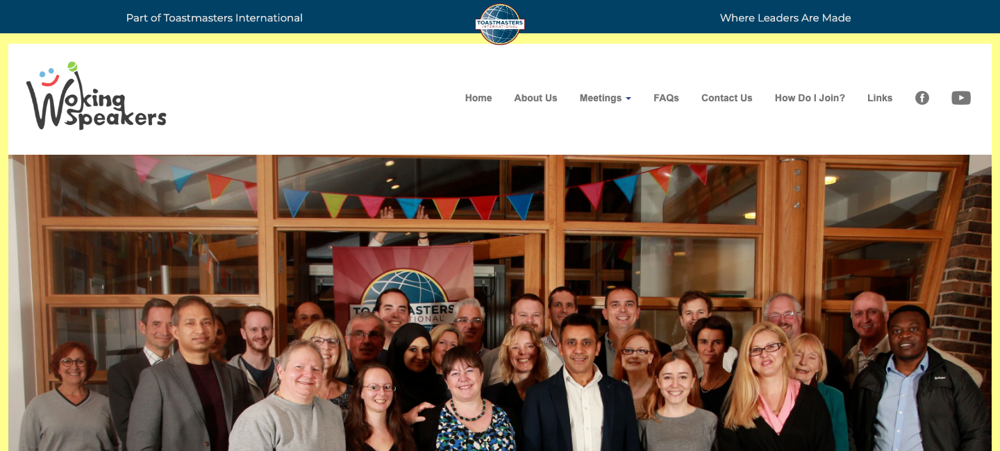
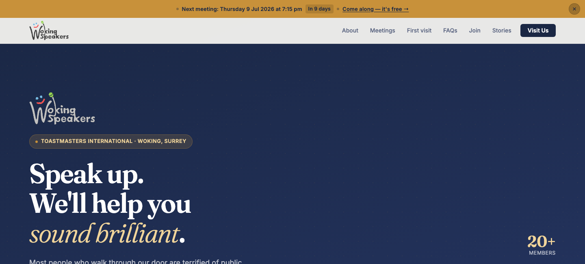
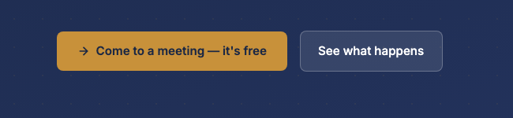

A proposal for the committee
Should we switch to the new website?
A side-by-side look at wokingspeakers.org.uk today vs. the proposed replacement — checked live, not just prettier.
A side-by-side look at wokingspeakers.org.uk today vs. the proposed replacement — checked live, not just prettier.
This is what a guest actually sees in the first two seconds on each site — nothing staged, no cherry-picking.

Old siteThe first thing you see on landing is a website that looks dated, with no real hook for a new visitor. The hero photo is nice, but it carries no headline and no message of its own — a first-time visitor learns nothing about what to expect.

New siteA modern design that presents the club at its best. The headline speaks directly to a nervous first-timer, with the club's free, no-pressure offer right underneath — and the next meeting date is visible before you've even scrolled.
Same club, same information — but rebuilt around the person who actually matters most: a guest deciding whether to walk through the door.

Not improvements on existing pages — these simply don't exist on wokingspeakers.org.uk today.
The Join page works out your total cost on the spot based on your start month, alongside a clear list of member benefits — no manual maths for the Treasurer or the new member.
Joining fees and renewals can be paid online via Stripe — no more chasing cash or cheques at a meeting.
After joining or getting in touch, visitors land on a real confirmation page instead of being left wondering if anything happened.
Broken or mistyped links land on an on-brand page that helps people find their way back, instead of a bare server error.
A clear, GDPR-aware explanation of what data is collected through the contact form and Stripe, and why — something the old site has never had.
Real before/after stories from members, plus a "who comes here" section — giving prospective guests social proof the old site never offered.
This isn't a mockup or a prototype — every section on this page is already built and working. Going live is a small, low-risk step, not a project.
The whole site is finished and running today — nothing to design, code, or approve from scratch.
Meeting dates, prices and wording are edited by opening a plain text file and typing the change — no admin panel or software to learn.
The contact form and online membership payments work out of the box — nothing further to set up after launch.
Pointing wokingspeakers.org.uk at the new site is the only change needed — nothing for members to install or learn.
A prospective guest lands on a clearer pitch, finds the next meeting date instantly instead of digging through a submenu, and gets two obvious buttons inviting them in — not a nav-bar link buried among ten others. Every change on this page is aimed at the same goal: more guests walking through the door, and more of them coming back.